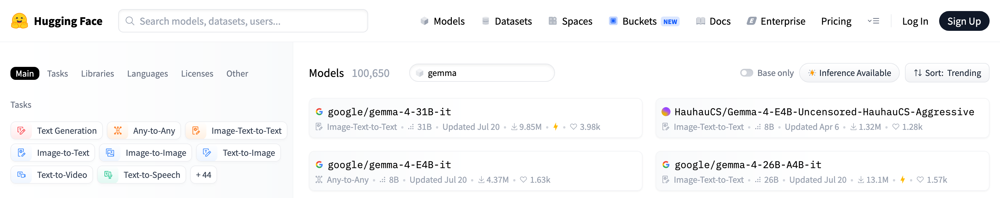
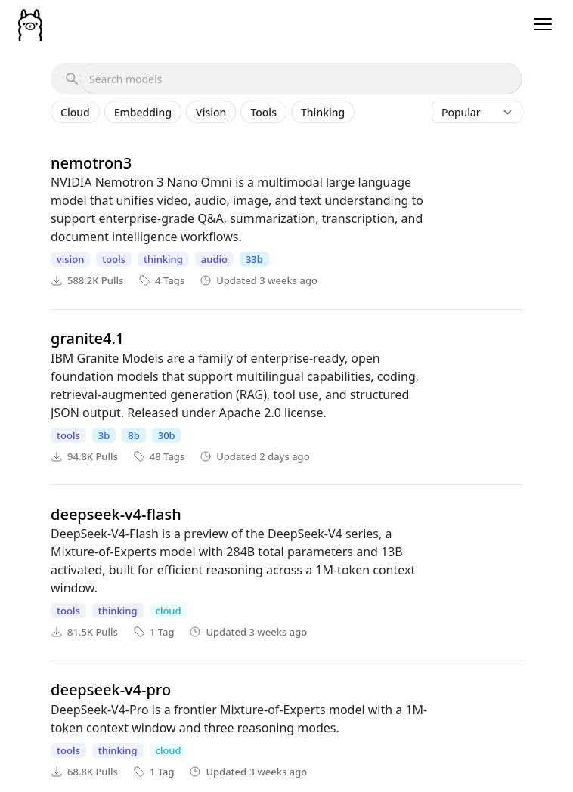
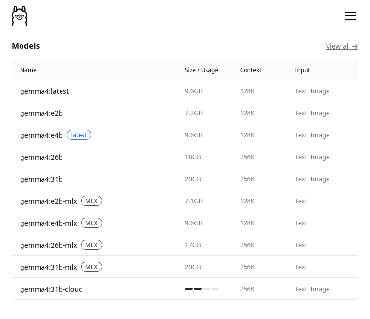
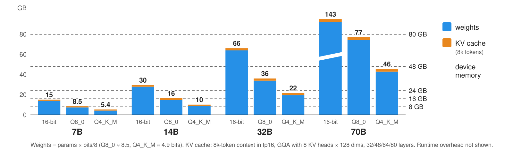
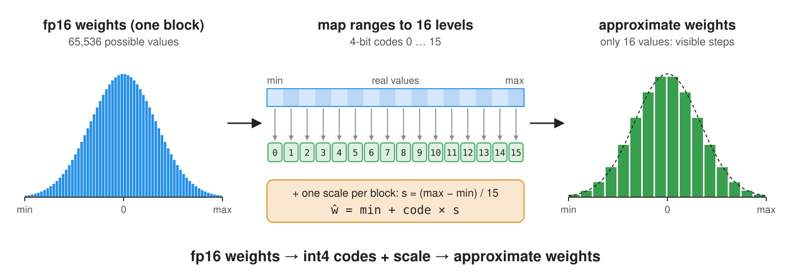
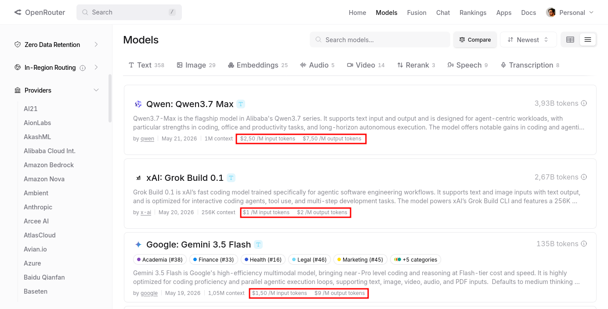
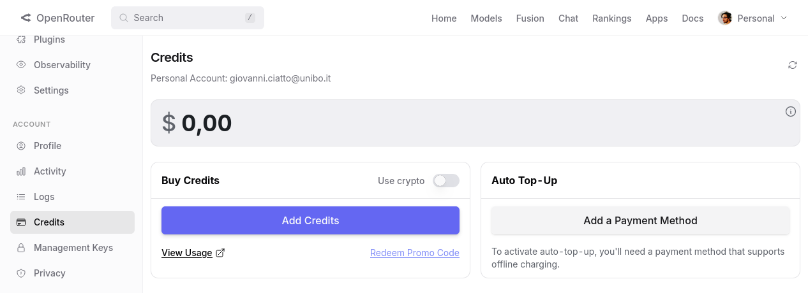
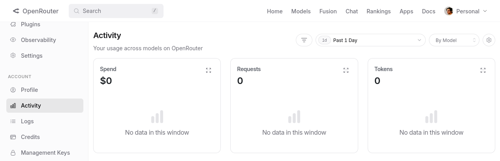
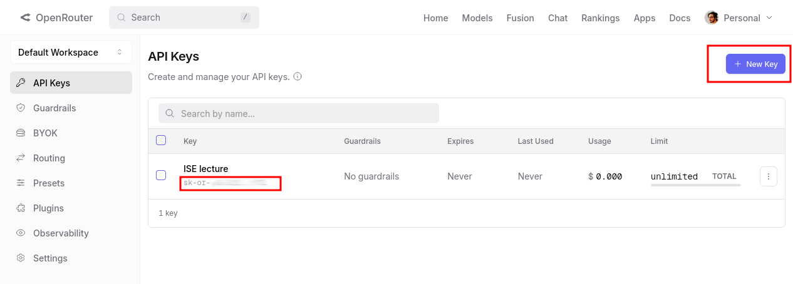
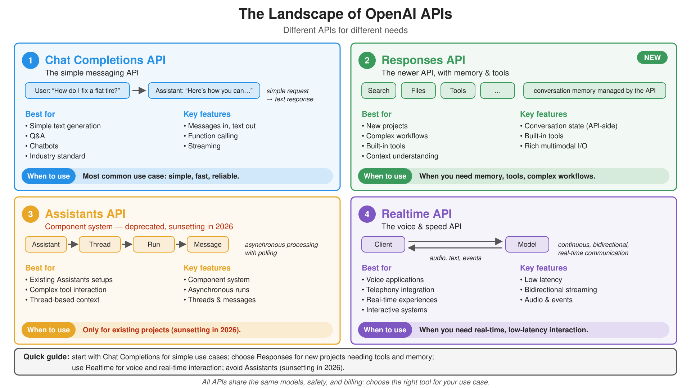

Compiled on: 2026-10-10 — printable version
On-premise vs. On-cloud deployment
Service Provider: several exist, with different offerings in terms of models, pricing, and features
Web API Compatibility: early providers (e.g. OpenAI, Google) invented their own APIs, similar in the spirit, but different in syntax
Client Libraries, in target programming languages wrap Web API clients and make it easier to use LLMs programmaticatically
A model zoo (a.k.a. model hub, catalog, library) is a searchable collection of models made available by some provider, each one with:
Zoos are the entry point for model selection, which is a recurring activity in GenAI engineering (cf. GenAI workflow)
Hugging Face Hub is a model zoo with millions of models for any task and any modality,

| Hugging Face Hub | Ollama library | Open Router | |
|---|---|---|---|
| Kind | download (+ some hosted inference) | download, run locally | on-cloud, pay per token |
| Size | millions of models (any task, any modality) | hundreds of curated LLMs | hundreds of LLMs from dozens of providers |
| Naming | organization/model-name |
model:variant (e.g. gemma4:e2b) |
provider/model[:tier] (e.g. google/gemma-4-26b-a4b-it:free) |
| Variants | separate repositories (e.g. ...-GGUF, ...-AWQ) |
tags for size and quantization | one entry per model, served by several providers |
| Metadata | full model card, files, license, community | size, context, capabilities, quantization | price, context, latency/throughput stats, supported parameters |
| License | per model (shown as a tag) | per model (in the model page) | provider’s terms of service apply |
llama-3.1, qwen3, gemma-48b, 70b, or 26b-a4b (MoE: total vs. active parameters)base (pure next-token predictor) vs. instruct / it / chat (tuned to follow instructions: this is what you want for Chat Completion), or coder, vl / vision, thinkingQ4_K_M, GGUF, AWQ, fp8gpt-4o-2024-08-06 (pin it for reproducibility!)Reference technology: Ollama
Ollama is a company that provides a containerized solution for hosting and running LLMs on-premise, with a focus on ease of use and accessibility
It offers a model zoo with several pre-trained models available for download and use
Ollama’s solutions can be used on various hardware & OS configurations, including Nvidia GPUs and Apple Silicon as well as Linux, MacOS, and Windows
Ollama’s API supports both a native CLI conversational interface and a Web API for programmatic access, making it versatile for different use cases and user preferences
Ollama may also be used an on-cloud service, but here we will focus on the on-premise deployment option alone
Ensure you have the required hardware (e.g. Nvidia GPU, Apple Silicon, etc.)
Install Ollama on your machine:
brew install ollama # For macOS (Apple Silicon)
curl -fsSL https://ollama.com/install.sh | sh # For Linux
irm https://ollama.com/install.ps1 | iex # For Windows (PowerShell)
Activate the Ollama service in some shell (alternatively, configure a deamon to run it in background):
ollama serve
Have a look to Ollama’s model zoo on https://ollama.com/models, and select some model you like among the many variants available
model:variant, most commonly the variant denotes the size of the model

Pick one model, e.g. gemma4:e2b, and pull it:
ollama pull gemma4:e2b
You may use Ollama’s native CLI conversational interface to try the model out:
ollama chat gemma4:e2b
example of conversation (notice that the model is also showing its thinking process):
>>> ciao!
Thinking...
Thinking Process:
1. **Analyze the input:** The input is "ciao!". This is an informal Italian greeting, meaning "hello!".
2. **Determine the appropriate response:** Since the user initiated a friendly greeting, the response
should also be a greeting, ideally reciprocating the language or offering a friendly follow-up.
3. **Formulate the response (in Italian):** The simplest and most common reply is "ciao" (hello/hi) or
a slightly expanded version.
4. **Add a standard conversational element (optional but good practice):** Asking how the user is doing
is polite. ("Come stai?" / "Come va?")
5. **Final selection:** A friendly, standard reply.
*Self-Correction/Refinement:* Keep it warm and open-ended.
*Output Generation:* Ciao! Come stai? (Hello! How are you?)
...done thinking.
Ciao! Come stai? 😊
e.g. it supports the same /v1/chat/completions endpoint, but not all the features of OpenAI’s API, e.g. fine-tuning, custom models, etc.
in the client program, recall to set the API base URL to point to your local Ollama service (by default: http://localhost:11434)
to prove that the API is working, you can send a test request via curl:
curl -X POST "http://localhost:11434/v1/chat/completions" \
-H "Content-Type: application/json" \
-d '{
"model": "gemma4:e2b",
"messages": [
{"role": "system", "content": "You are a helpful assistant."},
{"role": "user", "content": "What is the capital of France?"}
]
}'
result (converted in YAML for the sake of readability):
id: chatcmpl-85
object: chat.completion
created: 1779435598
model: gemma4:e2b
system_fingerprint: fp_ollama
choices:
- index: 0
message:
role: assistant
content: The capital of France is **Paris**.
reasoning: |-
Thinking Process:
1. **Analyze the Request:** The user is asking a factual question: "What is the capital of France?"
2. **Identify the Knowledge Needed:** I need to retrieve the capital city of France.
3. **Recall/Retrieve the Fact:** The capital of France is Paris.
4. **Formulate the Answer:** Provide a direct and accurate answer.
5. **Final Review:** The answer is correct and directly addresses the query. (Capital of France = Paris).
finish_reason: stop
usage:
prompt_tokens: 29
completion_tokens: 121
total_tokens: 150
7B = 7 billion parameters, 70B = 70 billionmemory ≈ (number of params × bits per param / 8) [weights] + KV cache [grows with context length] + overhead

| Model size | 32-bit (fp32) |
16-bit (fp16/bf16) |
8-bit (int8, Q8_0) |
~4-bit (Q4_K_M) |
|---|---|---|---|---|
| 1B | 4 GB | 2 GB | ~1 GB | ~0.6 GB |
| 7B | 28 GB | 14 GB | ~7.5 GB | ~4.3 GB |
| 14B | 56 GB | 28 GB | ~15 GB | ~8.6 GB |
| 32B | 128 GB | 64 GB | ~34 GB | ~20 GB |
| 70B | 280 GB | 140 GB | ~74 GB | ~43 GB |
Q8_0 ≈ 8.5 bits, Q4_K_M ≈ 4.9 bits, cf. llama.cpp’s quantize docs)Before pulling a model, do the math: if it does not fit in VRAM, it will either fail to load, or be (partially) offloaded to the CPU, becoming much slower

Several quantization methods and file formats exist, bound to specific runtimes:
| Format / method | Typical runtime | Notes |
|---|---|---|
| GGUF | llama.cpp, Ollama, LM Studio | single file with weights + metadata; runs on CPU, GPU, Apple Silicon; many quant levels |
| GPTQ | vLLM, Hugging Face Transformers | post-training quantization calibrated on sample data; GPU-oriented |
| AWQ | vLLM, Hugging Face Transformers | preserves the most “salient” weights; GPU-oriented |
| bitsandbytes (LLM.int8()) | Hugging Face Transformers | quantizes on the fly when loading; used for fine-tuning too |
| MLX | MLX, LM Studio | Apple Silicon only |
F16 / BF16: no quantization (16-bit)Q8_0: 8-bit (~8.5 bits per weight, including block scales), nearly losslessQ4_K_M: ~4.9 bits per weight on average
K = k-quants (super-blocks of weights whose sub-block scales are quantized too)Medium mix (a few sensitive tensors kept at higher precision): the usual default trade-offQ2_K, Q3_K_S, … : smaller and increasingly lossy (Small, Medium, Large mixes)IQ*: importance-matrix quants, calibrated on sample text to lose less at very low bit-widthse.g. ollama pull gemma4:e2b downloads the default quantization, whereas tags like ...-q8_0 or ...-fp16 select a specific one (see the “Tags” tab of each model on Ollama’s zoo)
(cf. https://docs.ollama.com/gpu for the supported GPUs)
gemma-4-26b-a4b-it = 26B total parameters, ~4B active per token| Machine | Comfortable model size |
|---|---|
| laptop, 8 GB RAM, no GPU | ≤ 3B (slow) |
| laptop, 16 GB unified memory (Apple Silicon) | ≤ 8B |
| desktop, 12–16 GB VRAM GPU | ≤ 14B |
| workstation, 24 GB VRAM GPU (or 32–64 GB unified memory) | ≤ 32B |
| server, 2× 80 GB GPUs | ≤ 70B at 8-bit, larger with 4-bit or MoE |
up-to-date GPU drivers (CUDA for Nvidia, ROCm for AMD; Metal is built into macOS)
a runtime: Ollama (simplest), LM Studio (GUI), llama.cpp (lowest level), vLLM (server-grade, high throughput, many concurrent users)
check what is running, and where, with ollama ps (illustrative output):
NAME ID SIZE PROCESSOR CONTEXT UNTIL
gemma4:e2b a1b2c3d4e5f6 7.2 GB 100% GPU 4096 4 minutes from now
PROCESSOR tells whether the model is fully on the GPU, or split between CPU and GPU (e.g. 48%/52% CPU/GPU)(Reference technology: Open Router)
Open Router (OR) is a company that provides an on-cloud service for using LLMs as services, with a focus on provider interchangeability
Its distinguishing feature is that it acts as an aggregator of multiple service providers, allowing users to access a variety of models from different providers via a single API, and helping to avoid vendor lock-in
Pretty rich model zoo, exposing models from many different providers, most notably: OpenAI, Anthropic, Google, xAI, Mistral, etc.
$/1M tokens (some times the prices is different for input or output tokens)

Models in OR’s zoo are named according to the following convention: provider/model followed by optional :tier, where:
provider is the name of the service provider (e.g. openai, qwen, google, etc.)model is the name of the model variant as provided by the provider (e.g. gpt-oss-120b, qwen3-coder, gemma-4-26b-a4b-it, etc.)tier is an optional suffix that denotes a specific variant of the model (most commonly free for free models)To allow for dynamic routing of requests to different providers in a transparent way, OR allows for the following meta-models:
openrouter/auto (AutoRouter): let OR decide which provider/model to use for each request, based on the request’s content and the current availability of models (paid: it may route to paid models, so it fails on accounts without credits)provider/* (e.g. anthropic/*, google/*, etc.): OR will serve each request with the best available model from the specified provider, according to the request’s content and the current availability of modelsopenai/gpt* will match any OpenAI model whose name starts with gpt (as currently provided by OR)Bring your own API key (BYOK): OR allows you to link your account with your API keys from other providers so that you can use OR’s API to access models from those providers, and therefore be charged according to the prices of those providers instead of OR’s prices
Dynamic routing and BYOK are peculiar features of OR, for the rest it’s an “ordinary” on-cloud provider
Sign up & log in for an account on Open Router: https://openrouter.ai
Optionally add payment methods and credits to your account in https://openrouter.ai/settings/credits

From time to time, keep an eye on the activity dashboard of your account, to check the usage and the costs of your requests: https://openrouter.ai/activity

To use OR’s models programmatically, you need to create an API key first (to be stored securely, and not shared with anyone else)

sk-or-XXXXXXXXXXXXXXXXXXXXXXXX: it is sufficient to consume your credit and to make requests on your behalfYou may test your API key with a simple curl request:
curl -X POST "https://openrouter.ai/api/v1/chat/completions" \
-H "Content-Type: application/json" \
-H "Authorization: Bearer YOUR_API_KEY" \
-d '{"model": "nvidia/nemotron-3-super-120b-a12b:free", "messages": [{"role": "user", "content": "What is the capital of France?"}]}'
answer (converted in YAML for the sake of readability):
id: gen-1779447979-077vepCYJjlgJfXKnK2q
object: chat.completion
created: 1779447979
model: openai/gpt-5-nano-2025-08-07
provider: OpenAI
system_fingerprint: null
service_tier: default
choices:
- index: 0
logprobs: null
finish_reason: stop
native_finish_reason: completed
message:
role: assistant
content: Paris.
refusal: null
reasoning: '**Providing the capital of France**
The user asked a straightforward question: "What is the capital of France?"
The answer is simple: Paris. I should respond concisely. My best guess is
to confirm: "The capital of France is Paris." While adding context could be
fun, it’s not necessary since the user didn’t request it. If I wanted to be
helpful, I could mention that Paris is the largest city and home to famous
landmarks like the Eiffel Tower, but I’ll keep it brief.**Confirming details
on Paris**
I can keep my response short and straightforward. The user asked about the
capital of France, and I can simply say: "Paris." If I want to offer more,
I could say, "The capital of France is Paris." I think that covers it! But
if they are interested, I could mention I''m happy to share more details about
Paris if they''d like. For now, I’ll stick with the essential answer.'
usage:
prompt_tokens: 13
completion_tokens: 243
total_tokens: 256
cost: 9.785e-05
is_byok: false
prompt_tokens_details:
cached_tokens: 0
cache_write_tokens: 0
audio_tokens: 0
video_tokens: 0
cost_details:
upstream_inference_cost: 9.785e-05
upstream_inference_prompt_cost: 6.5e-07
upstream_inference_completions_cost: 9.72e-05
completion_tokens_details:
reasoning_tokens: 192
image_tokens: 0
audio_tokens: 0
system, user, assistant, tool) and some content@startuml hide footbox actor “User” as U participant “Program (client)” as P participant “LLM provider (server)” as L note over P: history = [system: “be friendly”] U -> P: “hi, what time is it?” note over P: history += [user: “hi, what time is it?”] P -> L: POST /chat/completions {model, messages: [system, user]} L –> P: {choices: [{message: {assistant: “I have no clock, where are you?”}}], usage: {…}} note over P: history += [assistant: “I have no clock, …”] P -> U: “I have no clock, where are you?” U -> P: “Cesena, Italy” note over P: history += [user: “Cesena, Italy”] P -> L: POST /chat/completions {model, messages: [system, user, assistant, user]} note over L: keeps nothing between requests: the WHOLE history is re-sent L –> P: {choices: [{message: {assistant: “It’s … in Cesena”}}], usage: {…}} P -> U: “It’s … in Cesena” @enduml
Pick among a variety of models (by name), with different features, capabilities (and prices)
Provide general instructions for the task at hand (e.g. via system prompts, or top-level instructions)
Ask the next message to produce after a sequence of messages (e.g. via chat completions)
Message streaming: receive partial responses as they are generated by the model, instead of waiting for the full response
Include tools descriptions somewhere, so that model can ask the outer system to call (a.k.a. invoke) them when needed
Set the temperature of the model, to control the randomness of the output
/chat/completions end point; “Responses” uses /responses endpoint/v1/chat/completions, /v1/completions, /v1/embeddingsbase_url, api_key, and modelIt may happen that some providers (e.g. Ollama) offer an OpenAI-compatible API, but with a subset of the features of OpenAI’s API, and with some differences in the behavior of the models (e.g. in terms of tool use, reasoning traces, etc.)
when this is the case, the client will fail at run-time, complaining about unsupported features for non-reachable endopoint!
/v1/messagessystem: "..." separate from messages: [...]generateContent and streamGenerateContentcontents made of multimodal parts
text, image, audio, or file partsOpenAI-like APIs are becoming the de-facto standard, yet they are currently under active evolution

Reference technologies: OpenAI Client Libraries, LangChain
Main providers – especially the ones exposing their own Web APIs – come with their own client libraries
Two major didactical choices here (among the many possible ones):
This is the simplest and most common way to interact with OpenAI-like API providers, via the openai-python library
pip install openai to install it, into your (virtual) Python environmentopenai moduleAPI comes with synchronous and asynchronous variants
In both cases, ingredients are essentially the same:
openai.OpenAI (for sync) or openai.AsyncClient (for async) by which you interact with a model as provided by some provider
role (e.g. “system”, “user”, “assistant”) and content (actual text)client.chat.completions.create() method, accepting the conversation hystory as input plus some additional parameters (e.g. temperature, max_tokens, etc.) and returing either the full response (sync) or a stream of response parts (async), depending the parameter stream (respectively False or True)
.choices[0].message.content), plus some additional metadata (e.g. usage, model, etc.)
Let’s first create the client out of OR’s base URL, API key, and target model:
import os
from openai import OpenAI
# connection parameters: env vars, with defaults (the API key is asked interactively, if missing)
base_url = os.environ.get("OPENAI_BASE_URL", "https://openrouter.ai/api/v1/")
api_key = os.environ.get("OPENAI_API_KEY") or input(f"Enter your API key for {base_url}: ")
model = os.environ.get("OPENAI_MODEL", "nvidia/nemotron-3-super-120b-a12b:free")
client = OpenAI(base_url=base_url, api_key=api_key) # stateless: the conversation history is kept by us
notice that:
OpenAI(...) initializes the client in a very customizable waybase_url parameter, which commonly defaults to https://api.openai.com/v1, is set to OR’s base URL https://openrouter.ai/api/v1, unless specified otherwise via env varsapi_key is not in the source file, but taken from env var, or stdin (via input(...)), to avoid hardcoding it in the source codemodel (passed later, in each request) must be set to some model available in the provider’s model zooOPENAI_BASE_URL, OPENAI_API_KEY, OPENAI_MODEL are read via os.environ.get(NAME, DEFAULT) (all optional)Let’s then initialize the conversation history with a system prompt, containing general instructions for the LLM, which make sense w.r.t. the task at hand
messages = [dict(role="system", content="Just chat with the user, be friendly and helpful. Do not think. Just answer.")]
here one may give additional instructions to be followed in the rest of the conversation
Finally, we can enter a loop in which we read the user’s input from the command line, send it to the model as a new message in the conversation, and print the model’s response back to the command line
try: # Ctrl+C (KeyboardInterrupt) or Ctrl+D (EOFError) exit gracefully
while True:
user_text = input("you> ").strip()
if not user_text:
continue
if (cmd := user_text.lower().strip()) in {"/exit", "/quit"}: # sub-commands first
break
if cmd not in {"/retry"}: # on /retry, the history already ends with the last user message
messages.append(dict(role="user", content=user_text))
try: # the WHOLE history is sent at each request
response = client.chat.completions.create(model=model, messages=messages)
except Exception as exc: # e.g. network errors, rate limits, invalid API key
print(f"error> {exc}")
continue
answer = response.choices[0].message.content or "" # one choice expected, by default
print(f"assistant> {answer}")
messages.append(dict(role="assistant", content=answer)) # the answer becomes part of the history
except (EOFError, KeyboardInterrupt):
pass
print("Goodbye!")
notice that:
try-except block is used to catch user’s KeyboardInterrupt (e.g. Ctrl+C) or EOFError (e.g. Ctrl+D) to exit gracefully from the loop/exit, /retry, etc.)
/retry adds no new message, so the same history is re-sent, possibly getting a different answeruser, which is appended to the conversation history (messages list)model via client.chat.completions.create(...), with the conversation history as inputresponse.choices[0]), whose .message.content is what we show to the user
content may be None (e.g. on tool calls), hence the or ""Full code here
Example of interaction with the model (start with poetry run python -m snippets -l llmaas -e 1, cf. how to run snippets):
Enter your API key for https://openrouter.ai/api/v1/: sk-or-v1-XXXXXXXXXXXXXXXXXXXXXXXXX
Using model: nvidia/nemotron-3-super-120b-a12b:free
Type '/exit' or '/quit' to stop. Type '/retry' to retry the last message.
you> hi there, what time is it?
assistant> Hi! I don’t have a real-time clock on my end. Could you tell me your time zone or city, and I’ll give you the current local time? If you’d prefer, I can also give you the current UTC time.
you> it's Cesena, in Italy
assistant> In Cesena, Italy right now it’s Central European Summer Time (CEST), which is UTC+2. I can’t see the exact current time here, but if you tell me the current UTC time (or your device’s time), I’ll convert it to Cesena time for you.
Example: if UTC is 13:00, then Cesena is 15:00. Want me to convert a specific time? Or you can just check your phone or a world clock for the exact minute and second.
you> ^CGoodbye!
client.chat.completions.create(...)(cf. https://developers.openai.com/api/reference/resources/chat/subresources/completions/methods/create)
messages (list of dicts): the conversation history, as a list of messages, each one having a role (e.g. “system”, “user”, “assistant”) and content (actual text)
messages = [
dict(role="system", content="When asked about time, ask location if missing, then call the `get_current_time` tool."),
dict(role="user", content="What time is it?"),
{ "role": "assistant", "content": "What location should I use to check the current time?" },
{ "role": "user", "content": "Cesena Italy" },
{
"role": "assistant",
"content": None,
"tool_calls": [
{
"id": "call_current_time_001",
"type": "function",
"function": dict(name="get_current_time", arguments="{\"location\":\"Cesena, Italy\"}")
}
]
},
dict(role="tool", tool_call_id="call_current_time_001", content="{\"location\":\"Cesena, Italy\",\"timezone\":\"Europe/Rome\",\"current_time\":\"2026-05-23T14:37:00+02:00\"}"),
{ "role": "assistant", "content": "The current time in Cesena, Italy is 14:37 on May 23, 2026."}
]
tool_calls: the model asks the client to call some function (name + JSON-encoded arguments), instead of answeringrole="tool": the function’s result, sent back by the client, linked to the call via tool_call_idmodel (str): the name of the model to use for this request, which must be available in the provider’s model zoo
temperature (float in 0 .. 2): controls the randomness of the output, with higher values leading to more random output, and lower values leading to more deterministic output
client.chat.completions.create(...) (cont.)max_completion_tokens (int, default: None): an upper bound for the number of tokens that can be generated for a completion, including visible output tokens and reasoning tokens.
n (int, default: 1): the number of alternative completions to generate for each input message. The API will return a list of choices, each one containing a different completion.
stream (bool, default: False): whether to receive the response as a stream of parts, as they are generated by the model, instead of waiting for the full response. If True, the API will return an iterator that yields partial responses.
response_format (str, default: None): the format in which the model should return the response
{ "type": "text" } (default) means that the model should return a plain text response{ "type": "json_object" } forces the model to produce a JSON outout (assumes the schema of the object is described in the system prompt, or in some previous message){ "type": "json_schema", "description": STRING, "strict": BOOL, "schema": "..." } forces the model to produce a JSON output matching the provided JSON schema, with an optional description to better describe the schema to the model, and an optional strict flag to control how strictly the model should follow the schema (e.g. whether to allow extra fields or not)
stop (str or list of str, default: None): one or more sequences where the API will stop generating further tokens. The returned text will not contain the stop sequence.
client.chat.completions.create(...) (cont.)tool_choice controls which tools the model can use to solve the task at hand, and how to use them
none means that the model cannot use any tool, and should rely on its own knowledge and capabilities to answer the user’s questionauto (default) means that the model can decide autonomously which tools to use, if any, based on the conversation history and the task at handrequired means that the model must use at least one tool to answer the user’s question, and cannot rely solely on its own knowledge and capabilitiestools (list of dicts): the list of tools that the model can use, each one described by a dictionary containing at least a name and a description, and optionally some additional fields (e.g. parameters to describe the expected input for the tool, etc.)
tools=[
dict(
type="custom",
custom={
"name": "timezone_lookup_dsl",
"description": "Resolve a city and country into an IANA timezone. The input must follow the DSL form TIMEZONE(\"City, Country\").",
"format": {
"type": "grammar",
"grammar": { "syntax": "regex", "definition": "^TIMEZONE\\(\"[A-Za-z .'-]+, [A-Za-z .'-]+\"\\)$" }
}
}
),
dict(
type="function",
function={
"name": "get_current_time",
"description": "Get the current local time for a given IANA timezone.",
"parameters": {
"type": "object",
"properties": {
"timezone": { "type": "string", "description": "An IANA timezone identifier, for example Europe/Rome" }
},
"required": [ "timezone" ],
"additionalProperties": False
}
}
),
]
function tools are described by their name, a natural language description of what they do, and a JSON schema describing the expected input for the tool (e.g. the parameters of the function)
properties: the arguments and their types; required: the mandatory ones; additionalProperties: False: no other argument allowedcustom tools use a custom format description (e.g. a Regex describing the expected input for the tool) instead of JSON schemaReponses are JSON objects containing many relevant metadata, explanation below in YAML syntax for better readability:
object: chat.completion # the type of the returned object, which is "chat.completion" for chat completion requests
id: chatcmpl-abc123 # a unique identifier for this chat completion, which can be used for tracking and debugging purposes
model: gpt-4o-2024-08-06 # the actual model that served this request, which may be different from the one specified in the request due to dynamic routing or other factors
created: 1738960610 # the Unix timestamp of when the chat completion was created, which can be useful for logging and debugging purposes
request_id: req_ded8ab984ec4bf840f37566c1011c417 # a unique identifier for the request that led to this chat completion, which can be used for tracking and debugging purposes
tool_choice: auto # the tool choice mode that was used for this chat completion, which can be "none", "auto", "required", or other variants
usage: # the usage statistics for this chat completion
prompt_tokens: 13 # input tokens
completion_tokens: 18 # output tokens
total_tokens: 31 # total tokens (input + output)
seed: 4944116822809980000 # the random seed used for this chat completion, which can be useful for reproducibility and debugging purposes
top_p: 1 # the top_p value used for this chat completion (settable in the request)
temperature: 1 # the temperature value used for this chat completion (settable in the request)
presence_penalty: 0 # the presence_penalty value used for this chat completion (settable in the request)
frequency_penalty: 0 # the frequency_penalty value used for this chat completion (settable in the request)
system_fingerprint: fp_50cad350e4 # a fingerprint of the system configuration that served this request, which can be used for tracking and debugging purposes
metadata: {} # any additional metadata associated with this chat completion
choices: # list of choices generated by the model for this chat completion, each one containing the same fields
- index: 0 # the index of this choice in the list of choices
message: # the message generated by the model for this choice, which can contain various fields depending on the content and the features used
content: "Mind of circuits hum, \nLearning patterns in silence— \nFuture's quiet
spark."
role: assistant # the role of the message, which can be "assistant", "tool", "system", etc.
tool_calls: # the list of tool calls made by the model in this message, if any, each one containing at least a `name` and `arguments`, and optionally some additional fields (e.g. `id`, `type`, etc.)
- name: get_current_time # the name of the tool that was called by the model
arguments: "{\"timezone\":\"Europe/Rome\"}" # the arguments passed to the tool call, which can be a JSON string or other format depending on the tool's definition
id: call_current_time_001 # a unique identifier for this tool call, which can
finish_reason: stop # the reason why the model stopped generating tokens for this choice, which can be "stop" (if the model reached a stop sequence), "length" (if the model reached the max_completion_tokens limit), "tool_call" (if the model made a tool call and stopped), or other reasons
logprobs: # the log probabilities of the generated tokens for this choice, which can be useful for analyzing the model's confidence and behavior (not always present in the response)
response_format:
temperature): top_p samples only among the most likely tokens whose probabilities sum to top_p (nucleus sampling); presence_penalty / frequency_penalty discourage repeating tokens already generatedchoices[0]), and in particular about the generated message (choices[0].message.content), but the rest of the metadata can be useful for debugging, analysis, and cost control purposesAsyncOpenAI(...) and keep the same env-driven configuration style:import asyncio
import os
from openai import AsyncOpenAI
base_url = os.environ.get("OPENAI_BASE_URL", "https://openrouter.ai/api/v1/")
api_key = os.environ.get("OPENAI_API_KEY") or input(f"Enter your API key for {base_url}: ")
model = os.environ.get("OPENAI_MODEL", "nvidia/nemotron-3-super-120b-a12b:free")
client = AsyncOpenAI(base_url=base_url, api_key=api_key) # same API as OpenAI, but methods are coroutines
notice that:
AsyncOpenAI(...) is the async counterpart of OpenAI(...)asyncio to run the main async function, and to handle async calls in generalAs the program is asynchronous, we need to define an async def main(): function, which will contain the main logic of our program, and then run it with asyncio.run(main()) at the end of the script
if __name__ == "__main__":
raise SystemExit(asyncio.run(main())) # runs the event loop until main() completes
asyncio.run(...) starts the event loop, and returns main()’s result, used as the process’ exit code by raise SystemExit(...)The main function is structure more or less like the sync version, except for await (suspends main() until the request is sent), stream=True, async for (iterates over chunks as they arrive), and .delta (detailed next):
async def main() -> int:
print("Type '/exit' or '/quit' to stop. Type '/retry' to retry the last message.")
try:
while True:
user_text = input("you> ").strip()
if not user_text:
continue
if (cmd := user_text.lower().strip()) in {"/exit", "/quit"}:
break
if cmd not in {"/retry"}:
messages.append(dict(role="user", content=user_text))
try: # stream=True: the response is an (async) iterator of chunks, rather than a single object
stream = await client.chat.completions.create(model=model, messages=messages, stream=True)
except Exception as exc:
print(f"\nerror> {exc}")
continue
answer_parts = []
print("assistant> ", end="", flush=True)
try:
async for item in stream:
if not item.choices: # e.g. the last chunk, only carrying usage statistics
continue
chunk = item.choices[0].delta.content or "" # "delta": the new piece of text
if not chunk:
continue
chunk = chunk.replace("\n", "\nassistant> ")
print(chunk, end="", flush=True) # show it immediately
answer_parts.append(chunk)
except Exception as exc: # streams may fail midway too
print(f"\nerror> {exc}", flush=True)
continue
print(flush=True)
answer = "".join(answer_parts) # the full answer, to be kept in the history
messages.append(dict(role="assistant", content=answer))
except (EOFError, KeyboardInterrupt):
pass
print("Goodbye!")
return 0
Differences w.r.t. the sync version are in the way we i. create the completion request, by setting stream=True to receive a stream of response parts, and by awaiting the response with async for instead of just for; and ii. consume the stream of response parts
stream = await client.chat.completions.create(..., stream=True) # create the request + open response stream
answer_parts = [] # buffer to store the parts of the answer as they arrive
async for item in stream:
chunk = item.choices[0].delta.content or "" # get each chuck of the answer as it arrives (if any)
answer_parts.append(chunk) # store the chunk in the buffer
messages.append(dict(role="assistant", content="".join(answer_parts))) # reconstract the full answer and store it in the conversation history
.delta field in the response parts: the new piece of text, rather than the whole messagechoices at all (e.g. the last one, with usage statistics only), so they are skippedprint(..., end="", flush=True) to avoid buffering issues in the terminalFull code here
Example of interaction (start with poetry run python -m snippets -l llmaas -e 2):
Enter your API key for https://openrouter.ai/api/v1/: sk-or-v1-XXXXXXXXXXXXXXXXXXXXXXXXX
Using model: nvidia/nemotron-3-super-120b-a12b:free
Type '/exit' or '/quit' to stop. Type '/retry' to retry the last message.
you> hi bro
assistant> Hey! How’s it going? How can I help today? I can answer questions, explain things, help with writing or editing, brainstorm ideas, or assist with code—tell me what you need.
you> can you generate the first 20 verses of the divine comedy, in english?
assistant> Sure—do you want the first 20 lines from Inferno, Canto I in Henry Wadsworth Longfellow’s public-domain English translation, or would you prefer a different translation? I can paste exactly whichever you choose.
you> yeah that's fine
assistant> Here are the first 20 lines of Inferno, Canto I, from Henry Wadsworth Longfellow's translation of Dante Alighieri's *Divine Comedy*:
assistant>
assistant> Midway upon the journey of our life
assistant> I found myself within a forest dark,
assistant> For the strayed path had filled my soul with strife.
assistant> How hard a thing it is to tell what deep
assistant> And tangled wood this was, how wild and steep,
assistant> Which on my memory leaves so keen a fear!
assistant> So bitter is it, death is slight relief;
assistant> But to set forth the goodness that I found,
assistant> I'll speak of other things that there appeared.
assistant> I know not how I entered it, so deep
assistant> I had become in slumber at that hour
assistant> When I had wandered from the path of truth.
assistant>
assistant> But after I had reached a hill’s low foot,
assistant> Where the long valley terminating had
assistant> My fear, a place, I say, that any heart
assistant> With dread doth pierce; and when I looked above,
assistant> I saw its highest point already clothed
assistant> With rays of the planet that guides man aright
assistant> On every path. Then was the fear a while
assistant> Abated.
assistant>
assistant> Let me know if you’d like more!
you> Goodbye!
Goal: re-implement Example 1 with a different API and client library, to appreciate analogies and differences
anthropic Python SDK (pip install anthropic), which speaks Anthropic’s Messages API (POST /v1/messages)ANTHROPIC_BASE_URL=https://openrouter.ai/api and your OR keyClient creation is analogous to the OpenAI one (base URL, API key, model name):
import os
from anthropic import Anthropic
# defaults point to Ollama, which exposes an Anthropic-compatible API too (the API key is ignored)
base_url = os.environ.get("ANTHROPIC_BASE_URL", "http://localhost:11434")
api_key = os.environ.get("ANTHROPIC_API_KEY", "ollama")
model = os.environ.get("ANTHROPIC_MODEL", "gemma4:e2b")
client = Anthropic(base_url=base_url, api_key=api_key)
Anthropic(...) is the client, configured via env vars ANTHROPIC_BASE_URL, ANTHROPIC_API_KEY, ANTHROPIC_MODEL, defaulting to the local Ollama (http://localhost:11434, gemma4:e2b)/v1/messages to the base URL by itselfDifference: the system prompt is not a message, but a separate parameter, hence the history starts empty:
system = "Just chat with the user, be friendly and helpful. Do not think. Just answer." # NOT part of the messages
messages = []
The REPL loop is identical to Example 1, except for the request–response step:
try: # max_tokens is mandatory here (raise it for reasoning models: thinking tokens count too)
response = client.messages.create(model=model, system=system, messages=messages, max_tokens=2048)
except Exception as exc:
print(f"error> {exc}")
continue
# no "choices": the response content is a list of typed blocks (text, thinking, tool_use, ...)
answer = "".join(block.text for block in response.content if block.type == "text")
print(f"assistant> {answer}")
messages.append(dict(role="assistant", content=answer))
notice that:
client.messages.create(...) replaces client.chat.completions.create(...)system=... is passed aside messages=...max_tokens is mandatory (raise it for reasoning models, as thinking tokens count too: an empty answer is the typical symptom)choices: response.content is directly a list of typed content blocks (text, thinking, tool_use, …), so we concatenate the text onesrole (user or assistant) and content (a string, or a list of blocks)Full code here: run it with poetry run python -m snippets -l llmaas -e 1bis, with ollama serve active and gemma4:e2b pulled
Using model: gemma4:e2b
Type '/exit' or '/quit' to stop. Type '/retry' to retry the last message.
you> say hi in 3 words
assistant> Hi there!
you> and now in italian
assistant> Ciao a tutti!
you> Goodbye!
| Feature | OpenAI Chat Completions | OpenAI Responses | Anthropic Messages | Google generateContent |
|---|---|---|---|---|
| Endpoint | POST /v1/chat/completions |
POST /v1/responses |
POST /v1/messages |
POST /v1beta/models/{model}:generateContent |
| Python SDK call | client.chat.completions.create(...) |
client.responses.create(...) |
client.messages.create(...) |
client.models.generate_content(...) |
| System prompt | message with role="system" (or developer) |
instructions=... parameter |
system=... parameter |
config.system_instruction |
| History | messages=[{role, content}] |
input=[typed items] (or previous_response_id, server-side state) |
messages=[{role, content}] |
contents=[{role, parts}] |
| Roles | system, user, assistant, tool |
user, assistant + typed items |
user, assistant |
user, model |
| Output | choices[0].message.content |
output_text / output items |
content (list of typed blocks) |
candidates[0].content.parts (SDK: .text) |
| Max tokens | optional (max_completion_tokens) |
optional (max_output_tokens) |
mandatory (max_tokens) |
optional (max_output_tokens) |
| Tools | tools + tool_calls / role="tool" messages |
tools + function_call / function_call_output items |
tools + tool_use / tool_result blocks |
tools + functionCall / functionResponse parts |
| Structured output | response_format (JSON schema) |
text.format (JSON schema) |
tool-based, or JSON schema output (newer models) | response_mime_type + response_schema |
| Streaming | stream=True (deltas) |
stream=True (typed events) |
stream=True / messages.stream(...) (typed events) |
generate_content_stream(...) |
| Supported by Ollama | ✓ | ~ | ~ | × |
(cf. OpenAI, Anthropic, Google API references; Ollama’s OpenAI and Anthropic compatibility pages)
Same metamodel everywhere (model + instructions + ordered history of role-tagged, possibly multimodal, messages $\rightarrow$ next message + usage), different syntax: switching provider means rewriting the adapter layer, not the application logic
Problem: when experimenting with programmatic LLM interfaces, one does a lot of trial and erros, possibly consuming credits, or wasting attempts w.r.t. rate limits, etc.
Idea: implement a simple caching mechanism for your program, so that you can store the responses of the model for given inputs, and reuse them when the same inputs are encountered again (also good for reproducibility and debugging purposes)
Code: put your solution in
snippets/lecture_llmaas/exercise1/oflab-snippets, and run it viapoetry run python -m snippets -l llmaas -x 1
Solution: a walkthrough follows in the next (vertical) column — try on your own first!
⚠️ Spoiler alert: the walkthrough of the solution of Exercise 1 is about to start
master branch of lab-snippets
exercises branch, where it is just a placeholder# decision 1 (where?): a local, untracked folder (cf. .gitignore), configurable via env var
CACHE_DIR = Path(os.environ.get("LLM_CACHE_DIR", ".llm-cache"))
# decision 2 (when is it a hit?): same request = same provider, model, and messages (i.e. the whole history, not just the last message),
# plus any other parameter (e.g. temperature): all of them affect the answer, so all of them are part of the key
def cache_key(**request) -> str:
canonical = json.dumps(request, sort_keys=True, ensure_ascii=False) # same request => same string (keys are sorted)
return hashlib.sha256(canonical.encode()).hexdigest() # a fixed-length, file-name-friendly digest of that string
.llm-cache/, git-ignored), overridable via the LLM_CACHE_DIR env var
~/.cache/... (shared among projects)temperature)
sort_keys=True), then hashed (SHA-256) into a fixed-length, file-name-friendly key
json.dumps(...): object → JSON string (ensure_ascii=False keeps non-ASCII chars as they are); hashlib.sha256(bytes).hexdigest(): the hash, as a hex stringPath (from pathlib): object-oriented file-system paths, composable via /# decision 3 (how to store?): one JSON file per request, named after its key, so that lookup is just a file-existence check
def cached_completion(client: OpenAI, **request) -> str:
"""Like client.chat.completions.create(**request), but returns just the answer's text, from the cache if possible."""
file = CACHE_DIR / f"{cache_key(base_url=str(client.base_url), **request)}.json"
if file.exists():
print("# Cache hit! Returning cached response.")
return json.loads(file.read_text())["answer"]
response = client.chat.completions.create(**request) # cache miss: actually call the model
answer = response.choices[0].message.content or ""
CACHE_DIR.mkdir(parents=True, exist_ok=True)
# the request is stored too, for debugging (and reproducibility): one can see what produced the answer
file.write_text(json.dumps(dict(request=request, answer=answer), indent=2, ensure_ascii=False))
return answer
Path’s .exists(), .read_text(), .write_text(...), .mkdir(parents=True, exist_ok=True) do the I/O; json.loads parses JSON backclient.base_url enters the key too, so that different providers do not share entriescached_completion has the same parameters as client.chat.completions.create, so it is a drop-in replacement
try:
while True:
user_text = input("you> ").strip()
if not user_text:
continue
if (cmd := user_text.lower().strip()) in {"/exit", "/quit"}:
break
if cmd not in {"/retry"}:
messages.append(dict(role="user", content=user_text))
try:
answer = cached_completion(client, model=model, messages=messages) # was: client.chat.completions.create(...)
except Exception as exc:
print(f"error> {exc}")
continue
print(f"assistant> {answer}")
messages.append(dict(role="assistant", content=answer))
# Cache hit!/retry returns the same answer (the request is identical!): caching trades variety for cost and reproducibilityFiles of this solution, in the lab-snippets repository (master branch):
lab-snippets/
├── snippets/
│ └── lecture_llmaas/
│ ├── example1/
│ │ └── repl_chat_openai.py # the starting point
│ └── exercise1/
│ ├── __init__.py
│ └── repl_chat_cached.py # the solution
└── pyproject.toml # dependencies of all snippetspoetry run python -m snippets -l llmaas -x 1 (cf. how to run snippets)
OPENAI_API_KEY (and, optionally, OPENAI_BASE_URL, OPENAI_MODEL), as for Example 1, plus LLM_CACHE_DIRProblem: when interacting with LLMs via Web APIs, it may happen that some requests fail due to transient issues (e.g. network errors, rate limits, etc.)
Solution: it is good practice to implement some (configurable) retry mechanism with (configurable) exponential backoff to handle such cases gracefully
Code: put your solution in
snippets/lecture_llmaas/exercise2/oflab-snippets, and run it viapoetry run python -m snippets -l llmaas -x 2
try-except block, or with a more sophisticated library like tenacity?tenacity that has built-in support for exponential backoffargparse for command line arguments, and os.getenv for env varsSolution: a walkthrough follows in the next (vertical) column — try on your own first!
⚠️ Spoiler alert: the walkthrough of the solution of Exercise 2 is about to start
master branch of lab-snippets
exercises branch, where it is just a placeholder# decision 1 (how to detect a failure?): the client raises exceptions; only some of them are TRANSIENT, i.e. worth a retry
TRANSIENT_ERRORS = (
openai.APIConnectionError, # network errors (including timeouts)
openai.RateLimitError, # HTTP 429: too many requests
openai.InternalServerError, # HTTP 5xx: the provider is in trouble
) # others (e.g. openai.AuthenticationError, openai.BadRequestError) would fail again: retrying them only wastes time
# decision 2 (how to retry?): a plain loop + try/except, in a helper function wrapping ANY call (no extra library needed)
def with_retries(call, retries: int = 3, initial_delay: float = 1.0, backoff: float = 2.0, sleep=time.sleep):
"""Calls call(), retrying it up to `retries` times upon transient errors, waiting
initial_delay, initial_delay * backoff, initial_delay * backoff^2, ... seconds between attempts."""
for attempt in range(retries + 1): # 1 attempt + `retries` retries
try:
return call()
except TRANSIENT_ERRORS as error:
if attempt == retries: # no more retries: give up, letting the caller handle the error
raise
delay = initial_delay * backoff ** attempt # decision 3: exponential backoff, e.g. 1s, 2s, 4s, 8s, ...
print(f"# Attempt {attempt + 1} failed ({type(error).__name__}), retrying in {delay:g}s...")
sleep(delay) # `sleep` is a parameter, so that tests can replace it, and not actually wait
for loop + try/except, in a helper function wrapping any call (passed as a function)
tenacity library, providing retry decorators with built-in backoffsleep is a parameter, so that tests can replace it, and not actually wait
# decision 4 (how to configure?): argparse for command-line arguments, whose defaults come from env vars, whose defaults are hard-coded
def parse_args(args=None) -> argparse.Namespace:
parser = argparse.ArgumentParser(description="Sync CLI Chat with retries and exponential backoff")
parser.add_argument("--retries", type=int, default=int(os.environ.get("LLM_RETRIES", 3)), help="max number of retries (default: 3)")
parser.add_argument("--initial-delay", type=float, default=float(os.environ.get("LLM_INITIAL_DELAY", 1.0)), help="delay before the 1st retry, in seconds (default: 1)")
parser.add_argument("--backoff", type=float, default=float(os.environ.get("LLM_BACKOFF", 2.0)), help="multiplier of the delay, at each retry (default: 2)")
return parser.parse_args(args)
argparse for command-line arguments, whose defaults come from env vars, whose defaults are hard-coded
add_argument(name, type=..., default=..., help=...) declares an option; parse_args() returns a Namespace with one attribute per option (--initial-delay → config.initial_delay)poetry run python -m snippets -l llmaas -x 2 --retries 5 --backoff 3 # beware: the OpenAI client ALREADY retries twice, by default (with backoff), so we disable that, to be in control
client = OpenAI(base_url=base_url, api_key=api_key, max_retries=0)
OpenAI client already retries twice by default (with backoff): it is disabled here, to be in control (and to avoid multiplying retries) try:
while True:
user_text = input("you> ").strip()
if not user_text:
continue
if (cmd := user_text.lower().strip()) in {"/exit", "/quit"}:
break
if cmd not in {"/retry"}:
messages.append(dict(role="user", content=user_text))
try: # decision 5 (how to restructure?): the call is wrapped in a lambda, the rest of the REPL is unchanged
response = with_retries(lambda: client.chat.completions.create(model=model, messages=messages),
config.retries, config.initial_delay, config.backoff)
except Exception as exc: # non-transient errors, or transient ones persisting after all retries
print(f"error> {exc}")
continue
answer = response.choices[0].message.content or ""
print(f"assistant> {answer}")
messages.append(dict(role="assistant", content=answer))
lambda, and passed to with_retries: the rest of the REPL is unchangedexcept catches non-transient errors, and transient ones persisting after all retriesOPENAI_BASE_URL to an unreachable host) and watch the delays growFiles of this solution, in the lab-snippets repository (master branch):
lab-snippets/
├── snippets/
│ └── lecture_llmaas/
│ ├── example1/
│ │ └── repl_chat_openai.py # the starting point
│ └── exercise2/
│ ├── __init__.py
│ └── repl_chat_retry.py # the solution
└── pyproject.toml # dependencies of all snippetspoetry run python -m snippets -l llmaas -x 2 [--retries N] [--initial-delay SECONDS] [--backoff FACTOR] (cf. how to run snippets)
OPENAI_API_KEY (and, optionally, OPENAI_BASE_URL, OPENAI_MODEL), as for Example 1, plus (optionally) LLM_RETRIES, LLM_INITIAL_DELAY, LLM_BACKOFFCompiled on: 2026-10-10 — printable version